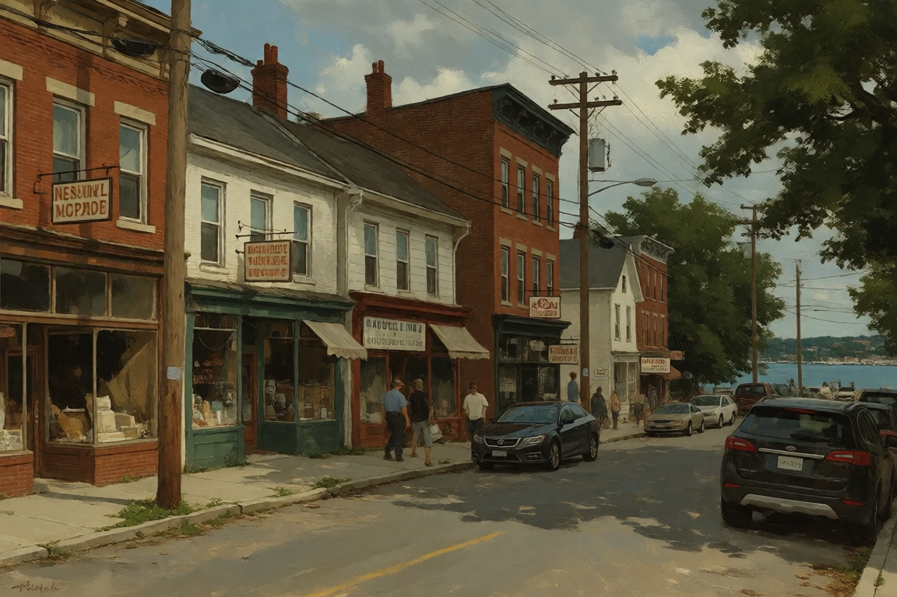
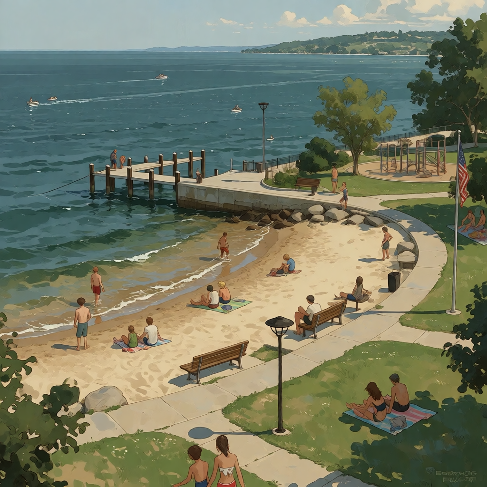
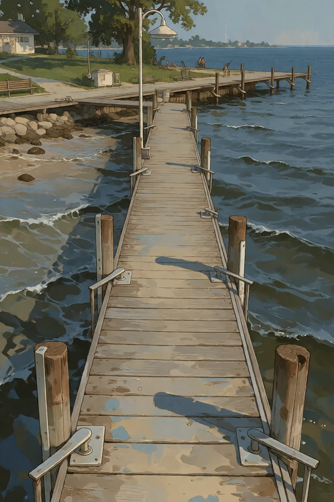
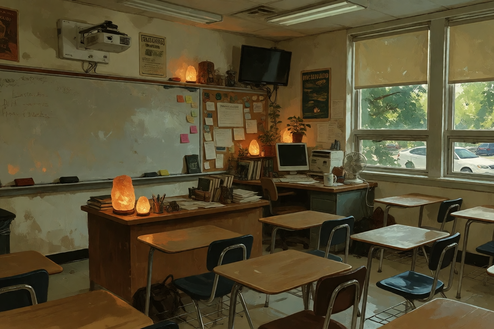
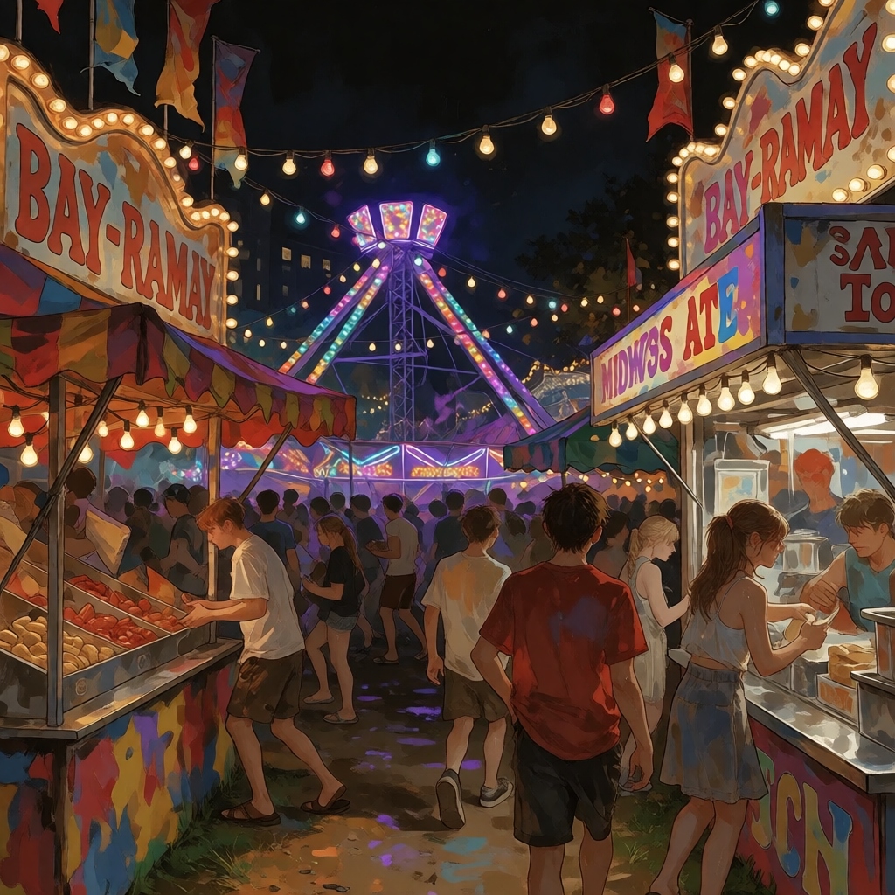
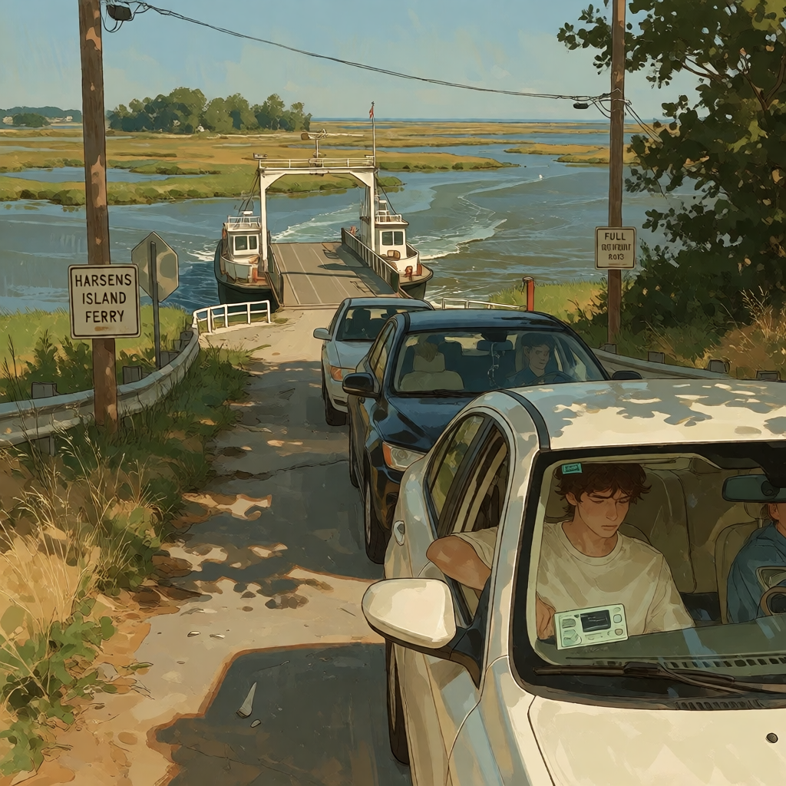

WASHINGTON ST.SOUTHEAST MICHIGAN // SUMMER 2015
NEW
BALTIMORE
lake water. parking lots. fishflies.
everybody knows somebody.
NOT UP NORTH.
RIGHT HERE.
THE PLACE
SMALL CITY.
BIG FUCKING
SOCIAL CIRCLE.
New Baltimore sits up against Anchor Bay like it has somewhere better to be. It doesn't. That's the point.
Washington Street, Front Street, M-29, Burke Park, the lake, the party store, the college parking lot, somebody's basement. You don't really leave. You just move around.
In 2015, everybody has a phone, everybody has Snapchat, and somehow everybody still knows everybody else's business.
THE ROAD
M-29
Two lanes. Lake view. The long way home when nobody wants to go home yet.


GETS GOOD. THEN KEEP DRIVING.
WASHINGTON / FRONT
DOWNTOWN
IS WHERE
EVERYBODY
COLLIDES.
Old buildings, newer businesses, sidewalks that have seen some shit, and enough foot traffic to make pretending you didn't see somebody nearly impossible.
Washington Street is the spine. Front Street drops you toward the water. Everything branches off from there.

THE WATER
ANCHOR BAY
LAKE ST. CLAIR




ANCHOR BAY COMMUNITY COLLEGE
ABCC
Two stories. Commuters. Twenty-person classes. Parking lot social hierarchy.



PEOPLE / 001
YOU'LL
KNOW
ROMAN.
19. ABCC. Athlete. Somehow knows everybody in town. Click through if you want to find out why.
OPEN ROMAN'S FILE → ROMAN SCHOLL / NEW BALTIMORE / 2015
ROMAN SCHOLL / NEW BALTIMORE / 2015
THE INTERNET, BEFORE EVERYTHING GOT WEIRD
ONLINE
IN 2015.
Snapchat was for pictures. Instagram was for pictures. Twitter was for saying something stupid and hoping nobody important saw it.


LATE JUNE // FIVE DAYS // EVERYBODY SHOWS UP
BAY-RAMA
Fishflies. Carnival lights. Fried food. Music. Fireworks. Somebody's parents are somewhere nearby pretending not to watch.




THE MOST IMPORTANT LOCAL ANIMAL
FISHFLIES ™
They show up. Everybody deals with it. Nobody needs a fucking documentary about how gross they are.


SUMMER IN NEW BALTIMORE
NOTHING
SPECIAL.
EVERYTHING.
Cut grass. Hot asphalt. Wet pavement. Boats. Somebody's music playing from an open car door. Cheap food. Expensive sneakers. Kids running around. A lake that looks different every night.



YOU DON'T
REALLY LEAVE.
You drive around. You go to the lake. You sit in somebody's basement. You end up at Bay-Rama. You run into somebody you know.
2015